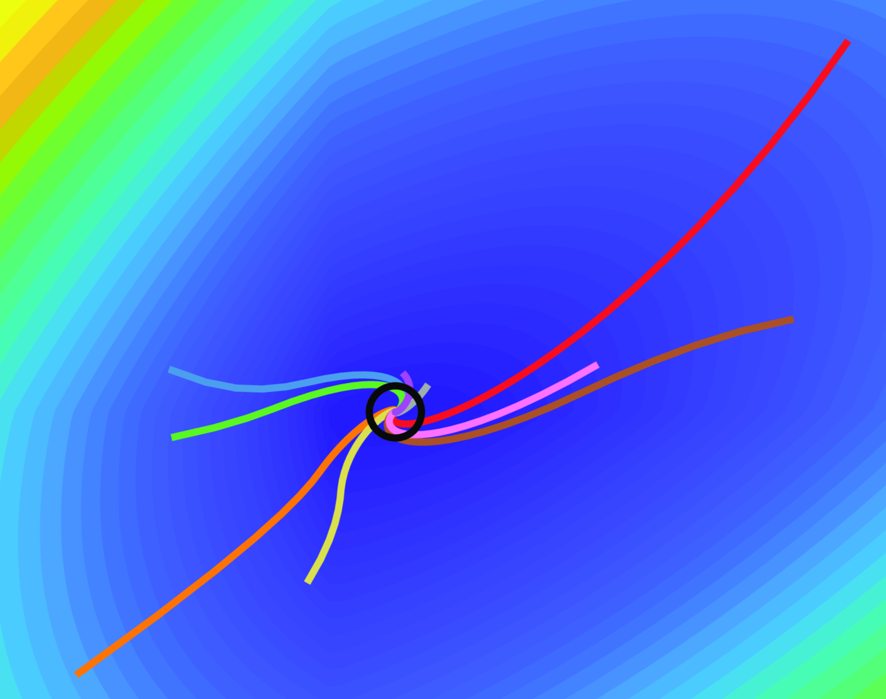

How it Works#
opt-syn analyzes and synthesizes optimization algorithms using concepts from robust control. This page summarizes optimization/inclusion problems, convergence conditions, and the mathematical certificates provided by opt-syn.
A composite optimization problem tries to find a point \(\beta^*\) satisfying
An inclusion problem is a more general concept than an optimization problem. Inclusion problems try to find a point \(\beta^*\) satisfying \(0 \in \sum_{i=1}^s F_i(\beta^*)\). A solution (fixed-point) to this zero-inclusion problem is a pair \((\beta^*, w^*)\) with
Zero-inclusion problems include solution concepts such as variational inequalities and constrained optimization problems. As an example, the zero inclusion problem \(0 \in \sum_{i=1}^s \partial f_i(\beta^*) \) is a necessary optimality principle for the composite optimization problem.
Optimization Algorithms#
An optimization algorithm is a procedure that generates a sequence of iterates \((w_k, z_k)_{k \in \N}\) satisfying \(w^i_k \in F^i(z^i_k)\).
Many common optimization algorithms can be expressed as the interconnection of operators and linear systems [1]. As an example, the gradient descent/forward-step method with stepsize \(\gamma > 0\) may be represented by
and the Douglas-Rachford algorithm [2] with parameters \(\gamma, \lambda \geq 0\) may be represented by
Figure 1 visualizes executions of the Douglas-Rachford algorithm to solve the optimization problem \(\min f(\beta) + \norm{\beta}_1\) for a quadratic \(f\).

Figure 1: The optimal solution is the black circle. The visualized curves are the outputs \(\{z_k^2\}_{k \in \N}\) starting from random initial conditions \(x_0\).#
Convergence Properties#
The algorithm is well-posed if the trajectory \((x_k, w_k, z_k)_{k \in \N}\) is unique for all initial conditions \(x_0\).
A fixed-point of the algorithm is a tuple \((x^*, w^*, z^*)\) satisfying
The algorithm is convergent if for every initial condition \(x_0\), there exists a fixed point \((x^*(x_0), w^*(x_0), z^*(x_0))\) such that
Optimality: \(\sum_{i=1}^s w^{*,i}(x_0) = 0\)
Consensus: \(z^{*1}(x_0) = z^{*2}(x_0) = \ldots = z^{*s}(x_0)\)
Attractivity: \(\lim_{k\rightarrow \infty} \mav{c}{x_k - x^*(x_0) \\ w_k - w^*(x_0) \\ z_k - z^*(x_0)}_2 = 0\).
It is linearly convergent with rate \(\rho \in (0, 1)\) if there exists a constant \(\gamma_0> 0\) with
Checking Convergence#
opt-syn certifies linear convergence of well-posed algorithms by checking two conditions: Robust Stability and the Solvability of Regulator Equations. This theory holds for includion problems with unique fixed-point pairs \((\beta^*, w^*)\) [3].
Robust Stability ensures convergence to 0 if 0 is the solution to the inclusion problem (\(0 \in F^i(0)\) holds for all operators \(F^i\)). Solvability of the Regulator Equations ensures that a nonzero solution to the inclusion problem can be shifted into a zero solution of an zero-centered problem (error coordinates).
Condition 1: Robust Stability#
Assume that the algorithm is well-posed, and the operator inclusion problem \(0\in \sum_{i=1}^s F^i(\beta^*)\) is uniquely solved by the pair \((\beta^*, w^*) = (0, 0)\) Then for all initial conditions \(x_0\), the subsequent trajectories of
satisfy \(\lim_{k \rightarrow \infty} \rho^{-k} x_k = 0\).
Condition 2: Solvability of Regulator Equations#
For any pair \((\beta^*, w^*)\) with \(\sum_{i=1}^s w^{*,i} = 0\), there exists a state \(x^*\) satisfying
Implications#
The Robust Stability criterion is an intensive dynamical test, and will be verified using Integral Quadratic Constraints and Linear Matrix Inequality methods [4] [5]. In contrast, the Regulator Equation can be easily checked by solving a linear system of equations. Uniqueness of the state \(x^*\) is provided by detectability of \((\Acl, \Ccl)\).
The Regulator Equation requirement is independent of the specific operators in \(F\). Robust Stability is verified for classes of operators (e.g. \(F_2\) is maximal monotone).
Fullfillment of the Regulator Equation and the opt-syn-verified Robust Stability requrirements imply that the algorithm is a fixed-point encoding [6]: every fixed point of the algorithm is a fixed point of the inclusion problem.
Networked Setting#
Synthesis is posed in terms of a Network separating the oracle \(F\) to the controller (you). These networks can model time-delays, cross-talk, channel memory, and other phenomena. The default case of no network dynamics (direct connection to the oracle \(F\)) is
A more general network can be modeled as a linear system. The interconnection between the network and a controller forms the algorithm that interfaces the operator \(F\).
The Regulator Equation condition in the networked setting can be expanded into
Regulator Equation: For any \((\beta^*, w^*)\) with \(\sum_{i=1}^s w^{*,i} = 0\), there exists a
If there does not exist a \((\Pi, \Gamma, \Phi)\) triple satisfying the top equation, then a convergent optimization algorithm cannot be found.
Under the Convergence and Regulator Equation conditions, convergence in all signals is achieved as
Controllers are formed by the interconnection of an internal model [7] [5] and a designed subcontroller. The internal model is based on the solutions \((\Pi, \Gamma, \Phi)\) of the regulator equations, and ensures that the Regulator Equation requirement is satisfied for any subcontroller.
The subcontroller must then ensure that the overall procedure is well-posed and obeys Robust Stability condition. Solving for the subcontroller can be accomplished through IQC synthesis methods [8]. Synthesis may also involve selecting a solution \((\Pi, \Gamma, \Phi)\) to the regulator equations [9].
Extensions#
The overview is limited to static optimization problems with time-independent memory/stepsize rules. The Problem Formulation section in Usage documents generalizations to this base construction, including
Performance criteria
Time-varying optimization problems
Time-varying dynamical systems
Repeated operator calls